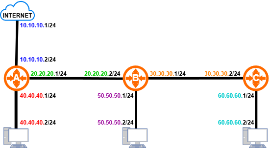

1. Pengertian
Routing adalah proses dimana suatu router me-forward pesan dari satu jaringan ke jaringan lain yang dituju. Routing dibagi menjadi 2, yaitu Routing Statis dan Routing Dinamis.
Routing Statis (Static Routing) adalah routing yang untuk terhubung ke jaringan lain harus dikonfigurasikan secara manual. Administrator jaringan harus mengkonfigurasikan semua alamat jaringan yang akan dituju, serta memasukkan atau menghapus rute statis jika terjadi perubahan topologi.
Routing Dinamis (Dynamic Routing) adalah routing yang mampu membuat tabel routing secara otomatis berdasarkan lalu lintas jaringan dan router yang terhubung. Administrator jaringan hanya perlu mengkonfigurasikan jaringan yang terhubung langsung dengan sebuah router; perubahan di router lain akan otomatis menambahkan alamat jaringan di tabel routing.
2. Konfigurasi Routing Statis
- aIP → Routes.
- bKlik tombol +.
- cAtur sesuai ketentuan berikut:
Dst. Address:[IP Network Tujuan]
Gateway:[IP Gateway] - dKlik tombol Apply → OK.
/ip route add dst-address=50.50.50.0/24 gateway=20.20.20.2
Contoh Routing Statis

Router A terhubung langsung dengan 3 alamat network: 10.10.10.0/24, 20.20.20.0/24, dan 40.40.40.0/24.
Jaringan yang tidak terhubung langsung dengan Router A membutuhkan pengaturan routing statis
untuk masing-masing jaringan.
Konfigurasi routing statis untuk Router A:
1. Dst. Address : 50.50.50.0/24
Gateway : 20.20.20.2
Keterangan : Router A dihubungkan ke jaringan 50.50.50.0/24
melewati port dengan alamat IP 20.20.20.2
2. Dst. Address : 60.60.60.0/24
Gateway : 20.20.20.2
Keterangan : Router A dihubungkan ke jaringan 60.60.60.0/24
melewati port dengan alamat IP 20.20.20.2
3. Dst. Address : 30.30.30.0/24
Gateway : 20.20.20.2
Keterangan : Router A dihubungkan ke jaringan 30.30.30.0/24
melewati port dengan alamat IP 20.20.20.2
/ip route add dst-address=50.50.50.0/24 gateway=20.20.20.2 /ip route add dst-address=60.60.60.0/24 gateway=20.20.20.2 /ip route add dst-address=30.30.30.0/24 gateway=20.20.20.2
3. Konfigurasi Routing Dinamis (OSPF)
- aRouting → OSPF.
- bBuka menu Instance, atur sesuai ketentuan berikut:
Router ID:[IP Identitas Router]
Redistribute Default Route:If installed (as type 1) - cBuka menu Network, klik tombol +, lalu atur:
Network:[IP Network]
Never./routing ospf instance set default router-id=1.1.1.1 redistribute-default=as-type-1 /routing ospf network add network=20.20.20.0/24 area=backbone
Contoh Routing Dinamis (OSPF)
Konfigurasi routing OSPF untuk masing-masing router: Router A 1. Instance Router ID: 1.1.1.1 Redistribute Default Route: If installed (as type 1) 2. Network • Network: 20.20.20.0/24 • Network: 40.40.40.0/24 Router B 1. Instance Router ID: 2.2.2.2 Redistribute Default Route: Never 2. Network • Network: 20.20.20.0/24 • Network: 30.30.30.0/24 • Network: 50.50.50.0/24 Router C 1. Instance Router ID: 3.3.3.3 Redistribute Default Route: Never 2. Network • Network: 30.30.30.0/24 • Network: 60.60.60.0/24
/routing ospf instance set default router-id=1.1.1.1 redistribute-default=as-type-1 /routing ospf network add network=20.20.20.0/24 area=backbone /routing ospf network add network=40.40.40.0/24 area=backbone
/routing ospf instance set default router-id=2.2.2.2 /routing ospf network add network=20.20.20.0/24 area=backbone /routing ospf network add network=30.30.30.0/24 area=backbone /routing ospf network add network=50.50.50.0/24 area=backbone
/routing ospf instance set default router-id=3.3.3.3 /routing ospf network add network=30.30.30.0/24 area=backbone /routing ospf network add network=60.60.60.0/24 area=backbone